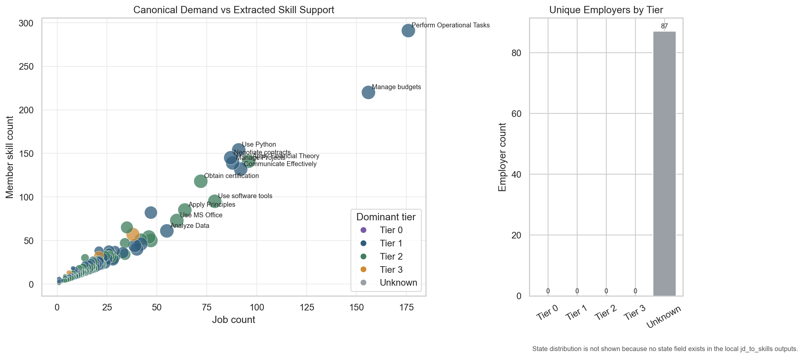
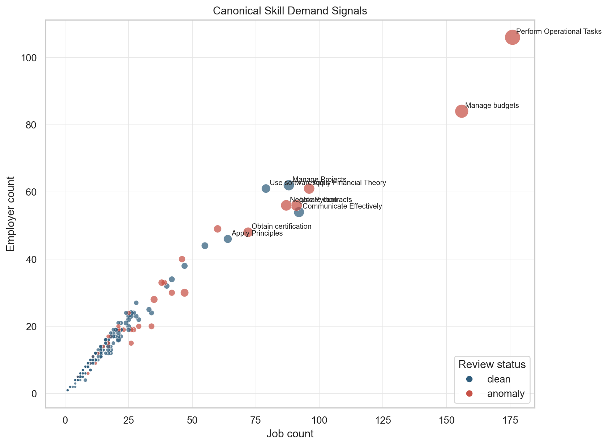
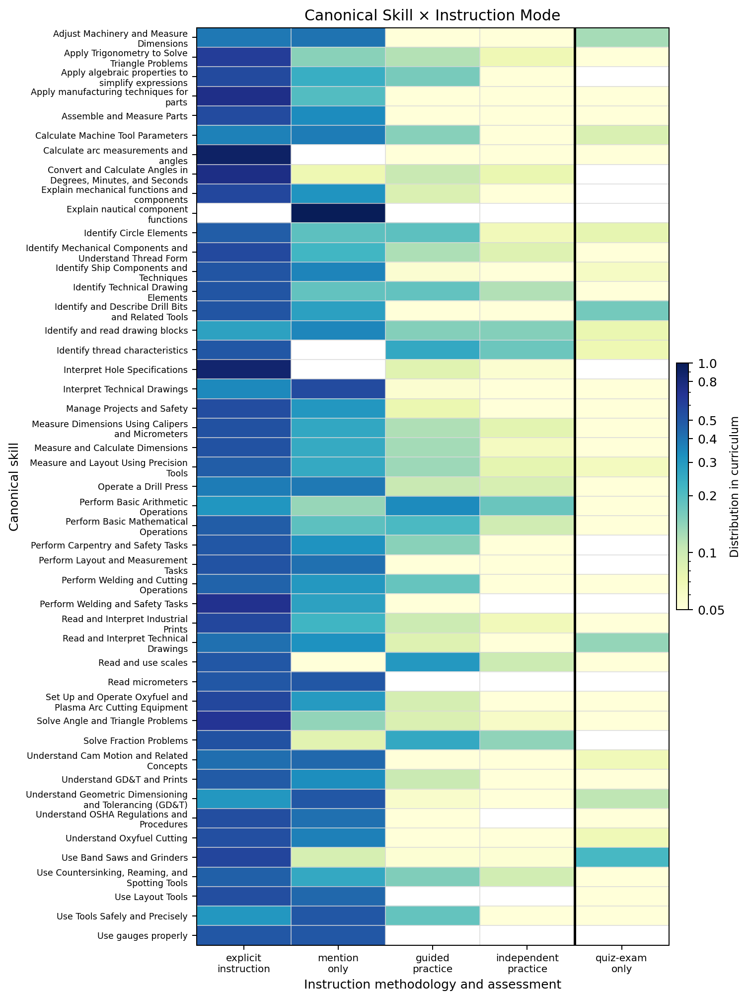
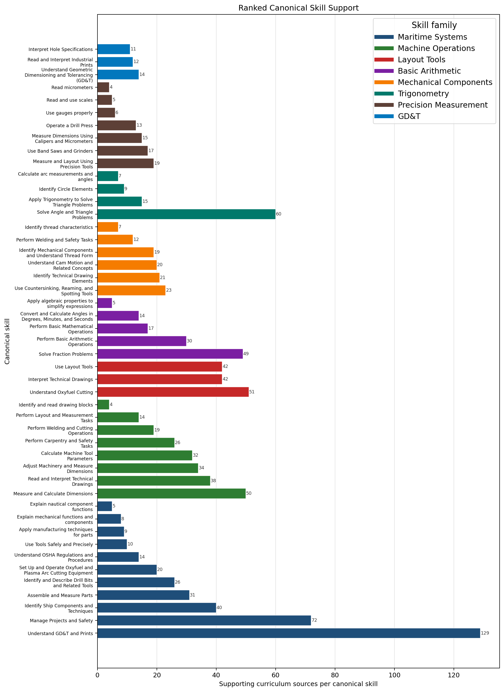

Publication section
Results
This section is intentionally structured for Codex and the analysis scripts to fill with final run outputs. The prose below is written so that charts can be inserted without rewriting the argument.
4.1 Demand-side skill signal from job descriptions
The demand-side analysis begins with active job descriptions from the target employer ecosystem. After scope filtering and text enrichment, the pipeline extracts skill evidence from job descriptions, normalizes equivalent phrasing, and aggregates demand by canonical skill and skill family.
Insert Figure 1: Demand-side skill family distribution Interactive stacked bar or treemap showing canonical skills by family, weighted by job count, employer tier, and posting count.
Draft interpretation:
The demand-side signal should be interpreted as a structured view of employer language, not a full census of all workforce needs. Job descriptions capture hiring-visible skills. They underrepresent tacit skills, internal incumbent-worker gaps, and skills taught informally on the job. They may overrepresent generic requirements repeated across templates. For that reason, the pipeline includes scope filters, boilerplate rejection, skill typing, coherence gates, and source lineage checks.
The most analytically useful outputs are not simply the most frequent skills. They are:
- skills with high demand across multiple employers;
- skills concentrated in strategically important employer tiers;
- skills that appear across multiple job families;
- skills with high demand but weak curriculum or credential coverage;
- emerging technical skills with low current training coverage but strong evidence in job descriptions.
Data slots to fill:
| Metric | Value | Source artifact |
|---|---|---|
| Employers in scoped ecosystem | [Codex fill] | employer_network_summary.json |
| Job postings harvested | [Codex fill] | job_database.csv |
| Job descriptions with usable full text | [Codex fill] | job_database_text_enriched.csv |
| Granular skill candidates extracted | [Codex fill] | s1_extract.csv |
| Normalized skills after filtering | [Codex fill] | s2_normalized.csv |
| Canonical skills after graph/dedup | [Codex fill] | s8_final_canonical_skills.csv |
| Skill families | [Codex fill] | s8_final_families.csv |
4.2 Supply-side skill signal from curriculum
The curriculum-side analysis applies the same extraction and normalization logic to training materials. The critical difference is that curriculum evidence is classified by instructional mode. This allows the dashboard to distinguish skills that are actually taught and assessed from skills that appear only as context.
Insert Figure 2: Curriculum skill hierarchy sunburst Skill family → canonical skill → instructional mode evidence.
Insert Figure 3: Canonical skill × instruction method heatmap Rows: canonical skills. Columns: explicit instruction, guided practice, independent practice, assessed, mention-only. Values: normalized evidence proportions.
Draft interpretation:
Curriculum coverage should not be interpreted as binary. A skill may be present but weakly supported. A training program that explicitly teaches and assesses blueprint reading is different from a program that mentions drawings in a safety discussion. For credentialing, the strongest claims should come from skills with direct evidence of practice and assessment.
This method can also identify underused curriculum assets. A program may already teach a skill demanded by employers, but the evidence may be buried in documents that are not visible to learners, employers, or credentialing bodies. In that case, the intervention is not necessarily new curriculum development; it may be better documentation, assessment alignment, modularization, or credential packaging.
Data slots to fill:
| Metric | Value | Source artifact |
|---|---|---|
| Curriculum source documents processed | [Codex fill] | curriculum_manifest.csv |
| Raw curriculum skill candidates | [Codex fill] | curriculum_s1_extract.csv |
| Normalized curriculum skills | [Codex fill] | curriculum_s2_normalized.csv |
| Canonical curriculum skills | [Codex fill] | curriculum_final_canonical_skills.csv |
| Skills with assessed evidence | [Codex fill] | instruction_depth_summary.csv |
| Skills that are mention-only | [Codex fill] | instruction_depth_summary.csv |
4.3 Demand-supply alignment
The central dashboard view compares demand-side canonical skills from job descriptions with supply-side canonical skills from curriculum.
Insert Figure 4: Demand vs. curriculum coverage matrix X-axis: employer demand intensity. Y-axis: curriculum evidence depth. Bubble size: credential availability. Color: gap pressure.
Proposed core metric: Skill Gap Pressure
Gap Pressure(skill) = Demand Intensity(skill)
× Strategic Weight(skill)
× (1 - Curriculum Coverage(skill))
× (1 - Credential Coverage(skill))
Where:
- Demand Intensity is based on job count, employer count, and source frequency.
- Strategic Weight can include employer tier, supply-chain position, defense relevance, or regional priority.
- Curriculum Coverage is weighted by instructional mode, with assessed and practiced skills weighted higher than mention-only evidence.
- Credential Coverage reflects whether a recognizable credential or micro-credential validates the skill.
This should be presented as a prioritization score, not an absolute truth. It is meant to guide review, not replace expert judgment.
4.4 Credential and pathway alignment
The credential layer should answer four questions:
- Which high-demand skills already map to recognized credentials?
- Which skills are taught but not credentialed?
- Which credentials exist but are not clearly connected to local demand?
- Which high-pressure gaps are best addressed by micro-credentials, apprenticeships, incumbent-worker modules, or full program redesign?
Insert Figure 5: Credential pathway graph Canonical skill → credential → provider → delivery modality.
Credential matching should remain conservative. A credential should not be treated as covering a skill unless there is explicit evidence in its description, competency list, assessment objectives, or linked standards. Keyword overlap alone is insufficient.
4.5 Method of instruction breakdown
Instruction mode is the bridge from skill extraction to credential readiness. A credential claim is strongest when curriculum evidence shows that a skill is:
- explicitly taught,
- practiced with guidance,
- practiced independently,
- assessed with observable criteria.
A weak signal is a skill that appears only as a mention, example, heading, or safety aside.
Insert Figure 6: Instruction depth by skill family Stacked bars showing assessed/practiced/explicit/mention-only evidence by family.
Draft interpretation:
The instruction-depth breakdown should be used to identify where a training provider already has the ingredients for a credential and where it has only topical exposure. This distinction is essential for employers. Employers do not merely need to know that a curriculum includes “metrology”; they need to know whether learners actually use calipers, micrometers, gauges, drawings, tolerances, and inspection documentation in assessed tasks.
Demand Signal
Canonical demand hierarchy
Employer-demand structure from the job-description pipeline, embedded as an interactive hierarchy.
Translation Layer
Granular to canonical sankey
The Sankey view shows how extracted phrasing is consolidated into canonical skills and broader families.



